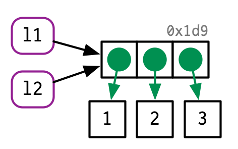
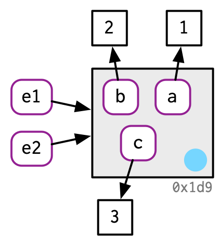
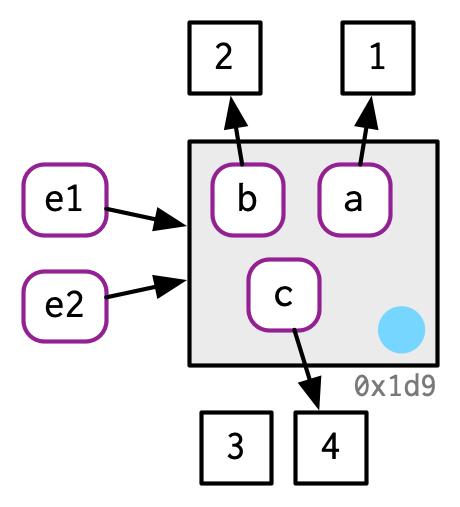

x <- c(1, 2, 3)Memory
Learning Objectives
- Names/Values
- Copy-on-modify
- Modify-by-reference
- Chapter 2 from Advanced R
- These lecture notes are mostly taken straight out of Hadley’s book. Many thanks for making my life easier.
- His images, which I use here, are licensed under

Names and Values
Computer Memory is information (like numbers or strings) that is for immediate use. When you put information there, it is located at some “address” on your computer, and you can retrieve it from that address.
The following puts the vector
c(1,2,3)in memory, and binds the namexto it
The function
lobstr::obj_addr()let’s us see the address of this object.lobstr::obj_addr(x)[1] "0x134494d68"When you assign
xto a new variable namey, it makes a new name that points to the same object asx.y <- xlobstr::obj_addr(y)[1] "0x134494d68"If you modify
y, then it will make a copy of object 0x134494d68 and pointyto that new object. This is called copy-on-modifyy[[3]] <- 4
lobstr::obj_addr(y)[1] "0x1448a9c18"Copy-on-modify exists so that
xdoes not change when you changey.x[1] 1 2 3You can use
tracemem()to track whenever an object is copied.x <- c(1, 2, 3) tracemem(x)[1] "<0x147644038>"y <- x y[[3]] <- 4 ## copy madetracemem[0x147644038 -> 0x14778f228]: eval eval withVisible withCallingHandlers eval eval with_handlers doWithOneRestart withOneRestart withRestartList doWithOneRestart withOneRestart withRestartList withRestarts <Anonymous> evaluate in_dir in_input_dir eng_r block_exec call_block process_group withCallingHandlers <Anonymous> process_file <Anonymous> <Anonymous> execute .mainy[[5]] <- 1 ## no copy made, y modifiedNote:
tracemem()is connected to the object (here 0x147644038), not the namex. So the following will not show a copy-on-modify because we changed the binding of the namex.x <- c(1, 2, 3) tracemem(x)[1] "<0x13340ca48>"x <- c(4, 5) y <- x y[[2]] <- 6Note:
tracemem()will give you weird results if you use it inside of RStudio. That’s because the Environment pane makes references to objects.Name
ainside function points to same objectx <- c(1, 2, 3) tracemem(x)[1] "<0x134432a48>"f <- function(a) { return(a) } z <- f(x) ## no copy made
and
xandznow point to same object
Exercise (From Advanced R): Explain the relationship between a, b, c and d in the following code:
a <- 1:10 b <- a c <- b d <- 1:10Verify your conclusions using
lobstr::obj_addr().Exercise: When does the address of
xchange? Usecat()andlobstr::obj_addr()to verify your answer. Doestracemem()help you here? Why are why not?x <- c() for (i in 1:10) { x[[i]] <- i }Exercise: When does the address of
xchange? Usecat()andlobstr::obj_addr()to verify your answer.x <- rep(x = NA_real_, length.out = 10) for (i in 1:10) { x[[i]] <- i }Exercise: When does the address of
xchange? Usecat()andlobstr::obj_addr()to verify your answer.x <- vector(mode = "numeric", length = 10) for (i in 1:10) { x[[i]] <- i }Understanding when an object is copied is important for performance. Making copies can be expensive if you are doing it a lot (like in a for-loop), making your code run much slower.
Lists and Data Frames
Recall that a list is a vector that can have elements of any type.
To do this, the list’s name points to a vector of references, and these point to the objects.
l1 <- list(1, 2, 3)
Copy on modify for a list only copies the references, so is much more memory efficient. This is called a shallow copy.
l2 <- l1
l2[[3]] <- 4
lobstr::ref()allows you to see the location of each component of a list.lobstr::ref(l1, l2)█ [1:0x145401928] <list> ├─[2:0x1452cb9e8] <dbl> ├─[3:0x1452cb828] <dbl> └─[4:0x1452cb668] <dbl> █ [5:0x146635c98] <list> ├─[2:0x1452cb9e8] ├─[3:0x1452cb828] └─[6:0x14576c168] <dbl>- Notice that the lists are at different addresses, the first two objects of each list are at the same address, but the third object of each list are at different addresses.
NOTE: Older versions of R (before 3.1.0) always created deep copies, and so were less memory efficient.
Data frames are lists of vectors (the columns)
d1 <- data.frame(x = c(1, 5, 6), y = c(2, 4, 3))
Modify a column, then only that column is copied and modified
d2 <- d1 d2[, 2] <- d2[, 2] * 2
lobstr::ref(d1, d2)█ [1:0x13442d3c8] <df[,2]> ├─x = [2:0x134336e28] <dbl> └─y = [3:0x134336dd8] <dbl> █ [4:0x13423bb88] <df[,2]> ├─x = [2:0x134336e28] └─y = [5:0x1342935d8] <dbl>Modify a row, then the entire data frame is copied (much less efficient).
d3 <- d1 d3[1, ] <- d3[1, ] * 3
lobstr::ref(d1, d3)█ [1:0x13442d3c8] <df[,2]> ├─x = [2:0x134336e28] <dbl> └─y = [3:0x134336dd8] <dbl> █ [4:0x1341a98c8] <df[,2]> ├─x = [5:0x134493d28] <dbl> └─y = [6:0x134493cd8] <dbl>
Character Vectors
A character vector is a vector of references to a global string pool.
x <- c("a", "a", "abc", "d")
But Hadley usually writes this as

Use
lobstr::ref()to show these references.lobstr::ref(x, character = TRUE)█ [1:0x134484e78] <chr> ├─[2:0x15330c540] <string: "a"> ├─[2:0x15330c540] ├─[3:0x134479278] <string: "abc"> └─[4:0x1544867f8] <string: "d">Exercise (from Advanced R): Why do you think
xis copied here? (it is only copied twice if you use R studio). Modify the code so thatxis not copied.x <- c(1L, 2L, 3L) tracemem(x)[1] "<0x153581388>"x[[3]] <- 4tracemem[0x153581388 -> 0x144fac6c8]: eval eval withVisible withCallingHandlers eval eval with_handlers doWithOneRestart withOneRestart withRestartList doWithOneRestart withOneRestart withRestartList withRestarts <Anonymous> evaluate in_dir in_input_dir eng_r block_exec call_block process_group withCallingHandlers <Anonymous> process_file <Anonymous> <Anonymous> execute .main tracemem[0x144fac6c8 -> 0x1455ea2d8]: eval eval withVisible withCallingHandlers eval eval with_handlers doWithOneRestart withOneRestart withRestartList doWithOneRestart withOneRestart withRestartList withRestarts <Anonymous> evaluate in_dir in_input_dir eng_r block_exec call_block process_group withCallingHandlers <Anonymous> process_file <Anonymous> <Anonymous> execute .mainx <- c(1L, 2L, 3L) tracemem(x)[1] "<0x1472bf148>"x[[3]] <- 4Ltracemem[0x1472bf148 -> 0x1473fb888]: eval eval withVisible withCallingHandlers eval eval with_handlers doWithOneRestart withOneRestart withRestartList doWithOneRestart withOneRestart withRestartList withRestarts <Anonymous> evaluate in_dir in_input_dir eng_r block_exec call_block process_group withCallingHandlers <Anonymous> process_file <Anonymous> <Anonymous> execute .mainExercise (From Advanced R): Sketch out the relationship between the following objects:
a <- 1:10 b <- list(a, a) c <- list(b, a, 1:10)
Object Size
You can tell how much memory an object takes up with
lobstr::obj_size().x <- 1:10 lobstr::obj_size(x)680 BFunctions also take up memory
lobstr::obj_size(mean)1.13 kBlobstr::obj_size(lm)63.50 kBBecause of the way objects efficiently bind, they might be smaller in memory than you expect.
Exercise: Why does the following list not take up 3 times as much memory as
x?x <- 1:10 y <- list(x, x, x) lobstr::obj_size(x)680 Blobstr::obj_size(y)760 BCharacter strings may also be a lot smaller than you expect.
a <- "hello world, how are you" b <- rep(a, 100) lobstr::obj_size(a)136 Blobstr::obj_size(b) ## not 100 times larger928 BNew versions of R have optimizations to efficiently store sequences of numbers called “ALTREP” for “alternative representation”. So the following are all the same size.
lobstr::obj_size(1:10)680 Blobstr::obj_size(1:100)680 Blobstr::obj_size(1:1000000)680 B
Modify-in-place
The opposite of copy-on-modify is modify-in-place, where a new object is not created you you modify it.
Modify in place occurs when there is only a single binding.
v <- c(1, 2, 3)
v[[3]] <- 4
Exercise: Why is a copy made here?
x <- 1:3 tracemem(x)[1] "<0x1465a7158>"x[[3]] <- 4tracemem[0x1465a7158 -> 0x134272f48]: eval eval withVisible withCallingHandlers eval eval with_handlers doWithOneRestart withOneRestart withRestartList doWithOneRestart withOneRestart withRestartList withRestarts <Anonymous> evaluate in_dir in_input_dir eng_r block_exec call_block process_group withCallingHandlers <Anonymous> process_file <Anonymous> <Anonymous> execute .main tracemem[0x134272f48 -> 0x134408388]: eval eval withVisible withCallingHandlers eval eval with_handlers doWithOneRestart withOneRestart withRestartList doWithOneRestart withOneRestart withRestartList withRestarts <Anonymous> evaluate in_dir in_input_dir eng_r block_exec call_block process_group withCallingHandlers <Anonymous> process_file <Anonymous> <Anonymous> execute .mainModify-in-place also occurs in environments.
Environments are data structures that you can think of as like an unordered list. It’s a “bag of objects”.
Here, I create an environment, and bind the names
e1ande2to it.e1 <- rlang::env(a = 1, b = 2, c = 3) e2 <- e1
If I change the
e1environment, thene2is also changed.e1$c <- 4 e2$c[1] 4
We will learn more about environments in Chapter 7, where this will be very important.
Garbage Collection
R often creates objects which no longer have names bound to them.
x <- 1:3
x <- 2:4
rm(x)
R has a garbage collector that periodically deletes these objects to free up memory. It is hard to reason when garbage collection is done.
This is only ever important to think about if you use C code in R without Rcpp.
New Functions
tracemem(): Tracks an object so that a message is printed whenever it is copied.untracemem(): Untracks an object.lobstr::ref(): Display a tree of object addresses.lobstr::obj_addr(): Gives the address (in memory) of an object that a name points to.lobstr::obj_size(): Gives the size (in memory) of an object.